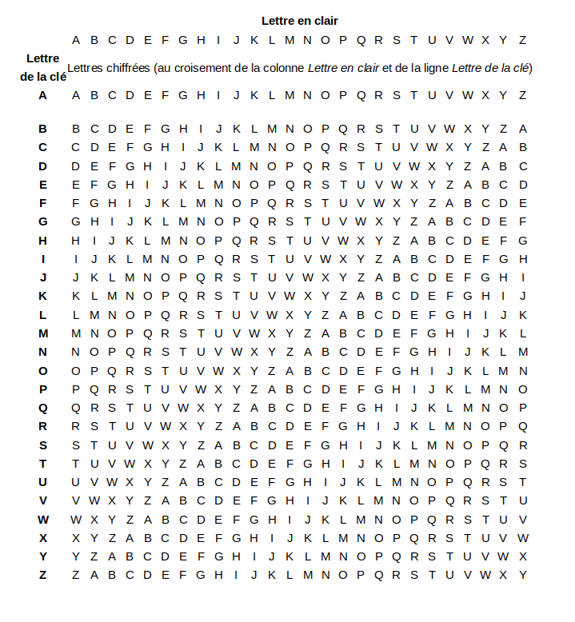

Blaise de Vigenère est un diplomate et cryptographe français né le 5 avril 1523 et mort presque 73 ans plus tard le 19 février 1596. Il décrit en 1586 un système de chiffrement dans son ouvrage intitulé Traité des Chiffres . Ce n’est pourtant pas le premier à décrire un système similaire, puisque cet honneur revient au cryptographe italien Giovan Battista Bellaso qui en parle 33 ans plus tôt en 1553.
Mais c’est quoi au juste le chiffrement de Vigenère ?
Il s’agit d’un “système de chiffrement par substitution polyalphabétique”
Cela signifie que le changement d’une lettre en une autre durant le codage varie en fonction de la position de celle-ci dans la phrase et la longueur de la clé. Ainsi un d peut devenir un f, un g ou un r et ce dans la même phrase et la même clé si celle ci le permet. Et c’est cette particularité qui permet à ce système de chiffrement d’être plus sécurisé qu’une clé dite “mono alphabétique" comme la célèbre clé de César qui consiste simplement en un décalage d’une lettre d’un certain nombre de places dans l’alphabet en fonction de la clé. Vigenère ou plutôt Bellaso utilise un chiffrement plus complexe et donc plus dur à décrypter, puisqu’il faudra attendre près de 277 ans avant qu’un major prussien le décode, un certain Friedrich Kasiski, qui invalide donc le système en proposant un test permettant d’estimer la longueur de la clé.
Voici quelques exercices pour vérifier si vous avez compris :
Décryptez ce message codé grâce à la clé “Hugo” :
Ilgjv ! Puiz puiz yt sayy gvlzwz ggznlk ql nklay gpyuiokuhfhhzszkas !
Plus dur cette fois-ci, une clé plus longue, “Apollinaire” :
Paid oce cmkxe uctd-kv, uvv glt dwfa yovxye, pwxph-iocj peh ljwwchweis? Bct um yea rhogsd, n'mft ufr icgecczevk trttpcm npzvw lp uftuoazui ei zp gqblwe !
“Cryptez donc ce message grâce à la clé Proust”
“Difficulté supérieure, on passe à une clé plus longue Baudelaire”
Le chiffrement se fait selon le tableau suivant :

Aurélien Urbillac, Arthur Félix et Luc Enderli, élèves au Lycée Franco-Allemand de Buc
{% endblock %}